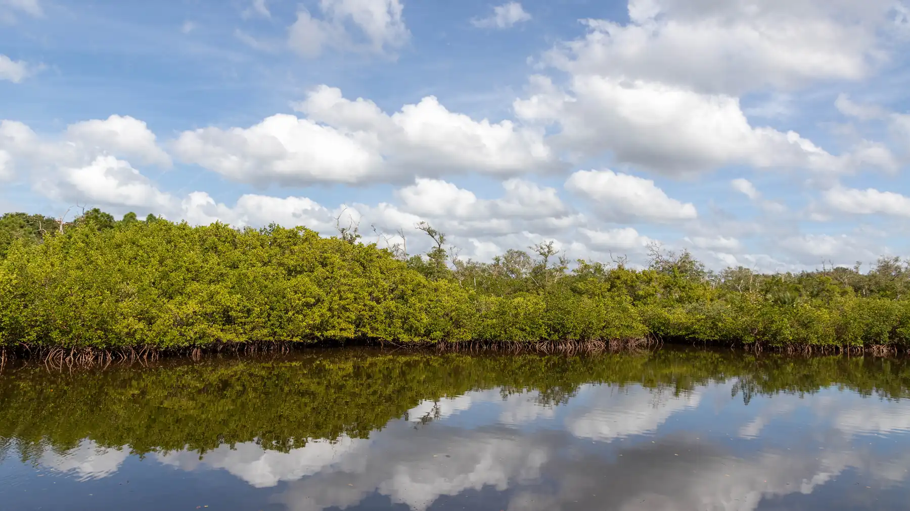

East County and Lakewood Ranch
Greyhawk Landing
Manatee County, Florida
Emerson Point Preserve, Palmetto · Photo Paul R. Burley, via Wikimedia Commons · CC BY-SA 4.0
Greyhawk Landing is a gated community east of Bradenton off State Road 64, built largely in the 2000s across a large parcel with a significant amount of the land left as lakes and preserve.
It is one of the larger single family communities in east Manatee County outside of Lakewood Ranch, with two amenity centers and its own CDD.
- To the Beach
- About 35 to 40 minutes
- Typical Range
- [[FILL IN: pull from Stellar MLS]]
- What Was Built Here
- Single family, Mediterranean and Florida transitional, built 2000s
The Details
What defines Greyhawk Landing.
- Gated entry with two separate amenity centers and pools
- A large share of the acreage kept as lakes, wetlands, and preserve
- Trails and boardwalks through the preserve areas
- A CDD assessment on the annual property tax bill
- Construction concentrated in the 2000s and early 2010s
Questions
What people ask me about Greyhawk Landing.
What do the assessments run here?
Greyhawk Landing carries both HOA dues and a CDD assessment, and the CDD appears on the property tax bill rather than being billed separately. The combined figure varies by phase and lot, so it needs to be pulled for the specific parcel. I do that before we tour rather than after you like the house.
What is the appeal versus Lakewood Ranch?
Generally a lower price point for comparable square footage, a single community rather than a collection of villages, and a considerable amount of preserve within the gates. Lakewood Ranch offers more amenities, more dining, and more inventory. It comes down to whether you want the larger ecosystem or a self contained community.
Are homes here newer than in Bradenton proper?
Substantially. Most of Greyhawk Landing was built in the 2000s, versus mid century construction across much of west Bradenton. That usually means newer roofs and systems, construction to more recent codes, and generally easier insurance placement, which is a real cost difference.
Nearby